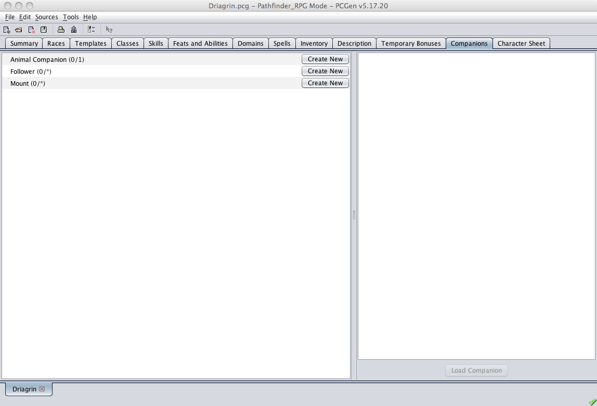
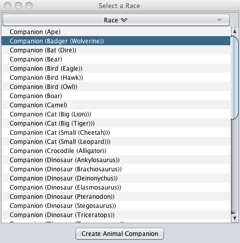
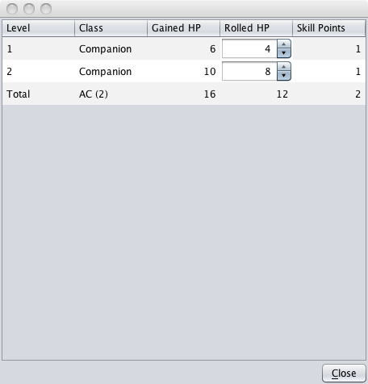
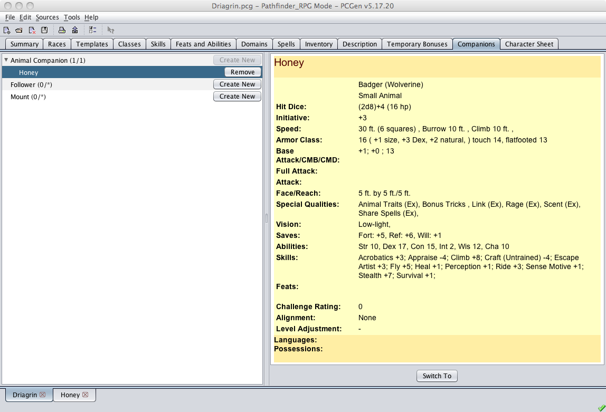

This tab allows animal companions, familiars, followers and mounts, including special mounts, to be created, added, modified and deleted from the character. For animal companions, familiars, and special mounts to show up, your character has to be of a class that allows those companions (e.g. Druid, Wizard, or Paladin respectively).

To create a companion you click on the Create New button, in the left-hand pane, next to the type of companion you would like to add to your character.

A dialog will pop up asking you to select the race of your new companion. You will then be asked for the save location of the companion's PCGen file.

PCGen will then prompt you for hit points for its monster levels (if applicable).
It will then swap you to that new character and you can flesh them out as required.

You can then save that new companion and go back the companion tab on the original character. You should then see the new companion added under the companion type in the left pane and a summary of the companion's character sheet in the right pane.
To remove a companion you will click on the Remove button next to the companion that you wish to remove.